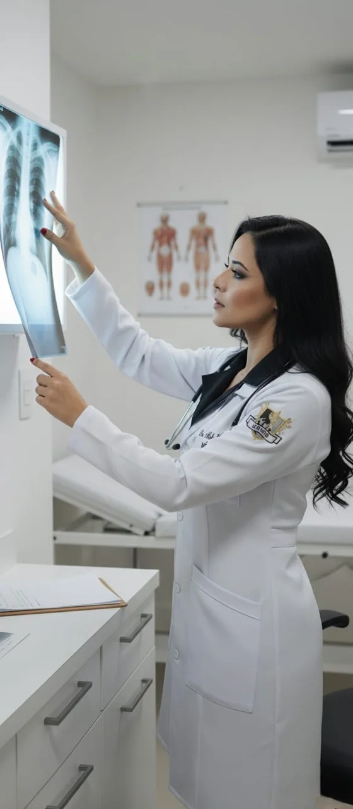

Lesões, traumas e sequelas
Características das lesões e suas repercussões sobre a integridade física e funcional.
 Dra. Michelle BragaMEDICINA PERICIAL JUDICIAL
Dra. Michelle BragaMEDICINA PERICIAL JUDICIAL
Medicina a serviço da compreensão
Análise médico-pericial fundamentada em ciência, conduzida com rigor e traduzida para o contexto judicial.
Independência na análise.
Responsabilidade em cada conclusão.
Na interface entre Medicina e Direito
Cada demanda judicial reúne uma história clínica e questões próprias. A atuação médico-pericial organiza esses elementos, examina as evidências e oferece uma leitura técnica, objetiva e adequada ao processo.
Serviços médico-periciais
Suporte técnico para a compreensão de questões médicas em demandas judiciais, com atenção às particularidades de cada caso.
Explore as áreas de atuaçãoElaboração de documentos técnicos fundamentados, com análise da documentação médica e conclusões apresentadas de forma clara, organizada e compatível com a questão em discussão.
Fundamentação científica e objetividadeAnálise crítica dos elementos médicos presentes nos autos e suporte técnico a advogados e escritórios na compreensão da matéria médico-pericial, respeitando os limites da atuação profissional.
Suporte médico ao trabalho jurídicoLeitura criteriosa de prontuários, exames laboratoriais e de imagem, laudos, atestados, relatórios clínicos e documentos hospitalares pertinentes à demanda.
Leitura integrada dos elementos clínicosAnálise de lesões, traumas, sequelas e repercussões sobre a capacidade funcional. O estudo do nexo causal entre eventos e condições clínicas é realizado quando integra o objeto da avaliação.
Avaliação orientada pelo objeto pericialConheça a profissional
Um olhar atento à história clínica.
Um compromisso com a verdade técnica.
Sou médica formada pela Universidade de Brasília e atuo na análise de questões médicas relacionadas a processos judiciais. Conduzo cada avaliação com independência, rigor técnico e responsabilidade profissional.
Minha formação em Perícia Judicial e em Criminologia Forense complementa a análise de casos que exigem leitura criteriosa dos elementos clínicos e clareza na elaboração de laudos e pareceres.
O método de trabalho
Da compreensão da demanda à comunicação das conclusões, cada etapa tem um propósito: construir uma análise consistente e tecnicamente fundamentada.
Identificar a questão médica, o contexto da demanda e o objeto da análise.
Avaliar a documentação clínica e os elementos pertinentes ao caso.
Relacionar os achados aos conhecimentos científicos e aos limites da avaliação.
Apresentar conclusões objetivas em linguagem adequada ao contexto jurídico.
Áreas de atuação
A análise é delimitada pelo objeto da demanda e pelos elementos médicos disponíveis.
Características das lesões e suas repercussões sobre a integridade física e funcional.
Limitações funcionais, capacidade laboral e condições de saúde discutidas no contexto ocupacional.
Relação entre eventos e repercussões clínicas, quando pertinente à questão médico-pericial.
Análise dos achados clínicos e da documentação em casos envolvendo agressões, violência e trauma.
Uma perspectiva complementar
A formação em Criminologia Forense amplia a compreensão de aspectos relacionados à violência, à vitimologia e à dinâmica das lesões.
Essa perspectiva contribui para a leitura dos casos pertinentes, sempre dentro dos limites da atuação médico-pericial.
Contexto, evidência e responsabilidade.
Informações iniciais
Prontuários, exames laboratoriais e de imagem, laudos, relatórios clínicos, atestados e documentos hospitalares. A documentação pertinente depende da questão médica a ser avaliada.
Sim. A assistência técnica oferece suporte médico-pericial a advogados e escritórios na análise dos elementos médicos de uma demanda judicial.
O escopo parte da compreensão da demanda, do objeto da análise e da documentação disponível. As condições de realização são alinhadas a partir dessas informações.
Uma descrição breve da demanda e do suporte médico-pericial desejado. Aguarde as orientações para o encaminhamento de documentos médicos ou informações sensíveis.
Contato profissional
Converse sobre a sua demanda e o suporte
médico-pericial necessário.
Canais de contato em breve.